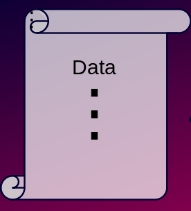
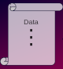

Introduction
WebAssembly
What makes WebAssembly different from Assembly?
- Foundational concept is the Module, not the MMU
- I/O goes through imports and exports, not syscalls
- Declared
- Typed
Virtualization 🤯
Shared-nothing linking
Isolation without virtual address space boundaries
Calls as "IPC"
Virtualization 🤯
The hardest problem in computers 😉
How do I copy data from one computer to another? 🤣

Source: https://xkcd.com/949/
In a similar way, filesystems and socket APIs involve a lot of knowledge of the host.
What's in a File?
| Data | Metadata |
|---|---|
|  |
Compute and Metacompute
| Compute | Metacompute |
|---|---|
|  | |
| operate on data | configure resources |
| algorithms and data structures | organize and navigate storage |
| business logic | manage access between different users |
| arithmetic | interface with humans |
POSIX is dynamically typed
Quiz! 😮
What's the difference between this:
$ foo < content.txt
and this:
$ cat content.txt | foo
Can you lseek on stdin in POSIX?
- If it's a normal file redirected with
<: ✅ - If it's a pipe: ❌
WebAssembly has a static typesystem. Let's use it!
Virtualization 🤯
I/O Types
Wasm-native I/O 🚀
I/O Types
Virtualization 🤯
I/O Types
What is an I/O Type?
- An abstraction for a common I/O pattern
- Expose data, hide metadata
Strategy: Define a few simple I/O types now, add more over time.
I/O Streams
Overview:
- Reliable in-order delivery of bytes
- or in the future, of arbitrary type
- Examples: sockets, pipes, character devices, files*
- Prototype: https://crates.io/crates/io-streams, https://crates.io/crates/nameless
Operations:
read(input)write(output)skip(input) - likereadbut discards datawrite_zeros(output) - likewritebut just writes zerosflush(output) - flush buffers, report errorsmedia_type- return astringwith the IANA Media Type (eg. "image/jpeg")pseudonym- return a handle to an identifierwrite_pseudonym- (output) write the name of a pseudonym to the outputforward-readfrom an input andwritethe data to another 💨
Constructors:
pipenull- (output) bit bucketfrom_array- form a stream from an I/O array at a given offset
I/O Arrays
Overview:
- Dynamic array of bytes
- or in the future, of arbitrary type
- Examples: disk partitions, memory buffers, device memory, files*
- Prototype: https://crates.io/crates/io-arrays
Operations:
read_atwrite_atlen- current lengthset_len- set current length, truncating or appending zerosadvise- optimization hintsflush- flush buffers, report errorsmedia_type- return astringwith the IANA Media Type (eg. "image/jpeg")pseudonym- return a handle to an identifiercopy-read_atfrom one I/O array andwrite_atthe data to another 💨
Constructors:
anonymousfrom_stream- read all the data from an input stream and write it into an anonymous I/O array
Typed Main
Typed main functions will be able to take I/O Types as arguments.
Programs which operate this way are independent of:
- Network stacks
- Filesystems
- Case sensitivity, Unicode normalization, path separators, the behavior of
.., how symlinks work, non-Unicode filenames, filename length limitations, trailing whitespace, ...
Errors
Report partial success along with failure.
- Wasm has multiple return values!
Error types:
- Applications usually don't care why
readorwritefailed - Detailed errors expose host information
- Options:
- Success/Failure
- Opaque handle
No EINTR
- Wasm has no signals! 😎
- No need to wrap
readandwritein retry loops
Don't be a file or a socket API:
- Errors and
EOFare sticky! - No
ETIMEDOUT - Atomicity? Seek higher-level APIs that preserve intent
Relationship to filesystem and sockets
The wasi-filesystem and (anticipated) wasi-sockets proposals will continue:
- Now with less pressure to provide perfect portability
- Can now more easily expand in scope
Some use cases will always need the extra functionality of wasi-filesystem and wasi-sockets.
Some host environments won't support that functionality.
WASI can accommodate both.
Other WASI APIS
wasi-clocks and wasi-random - convert to handles
- Add a Clock I/O type?
wasi-poll - add support for polling I/O Types
In Depth
🤿
Are files I/O Streams or I/O Arrays?
Both! (like POSIX)
With separate handles! (unlike POSIX)
What about lseek?
- POSIX
lseekbridges between array and stream - Emulate
lseekin libc
What about directories?
Directories have wildly differing semantics between platforms.
Alternative: stream of lazy streams
Write-Once Run Anywhere?
What's different between I/O Types and other common WORA approaches?
- Start with compute, not whole applications
- Push metacompute to the boundaries
- At the boundaries, maybe we still have filenames, or even GUIs
Compatibility with existing code
A libc mode that uses I/O streams and I/O arrays will be able to support:
read,write,pread,pwrite- and everything build around them
- all non-I/O things
lseek- Emulation for
open,mmap,socket, etc.
Continue to support the libc mode that uses wasi-filesystem and wasi-sockets.
Let developers chose!
Zero copy
- Ways to do zero-copy
forward,skip,write_zeros,copyio-array'sread_atskips intervening data- create an I/O Array and pass around a handle
readis not zero-copy- shared pages require protocols, synchronization
- not virtualizable
- shared pages require protocols, synchronization
- What can we do instead?
- Avoid bringing data into an instance that doesn't need it
- Use direct calls instead of shared-memory protocols where appropriate
Async
WebAssembly is starting a subgroup to talk about stack switching:
https://github.com/WebAssembly/meetings/blob/master/main/2021/CG-03-16.md#agenda-items
https://docs.google.com/presentation/d/1teI1N282B7Dog314G22Emmaur2XCVtqYwwq5c_AK-BE/edit#slide=id.p
Like the rest of WASI, I/O Types are independent of sync/async.
Data parallelism
That's a separate talk!
Things to come
- Vectored I/O - Maybe interface types can enable this automatically
- Multiplexed connections (QUIC, etc.)
- I/O Windows
- Interactive streams
- Text streams
- Terminal I/O
- A way to do
fsync/fdatasyncwhich preserves intent